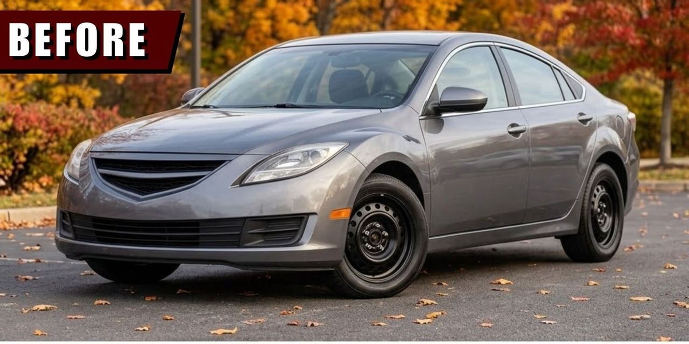
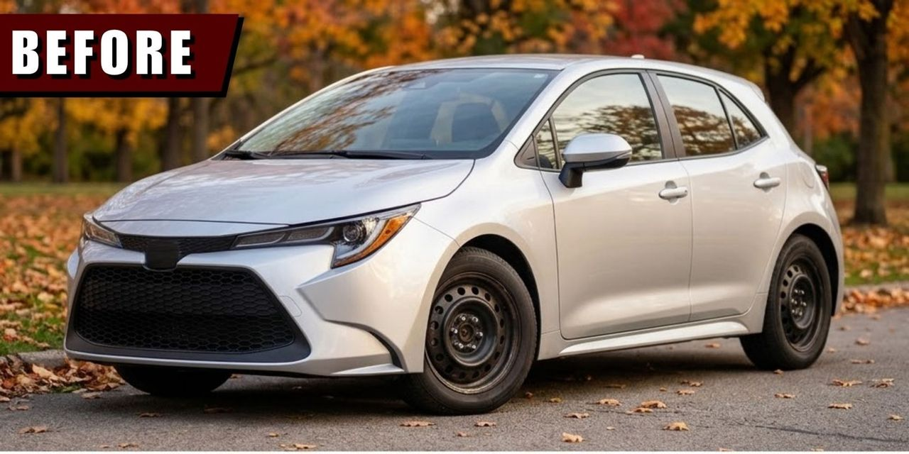
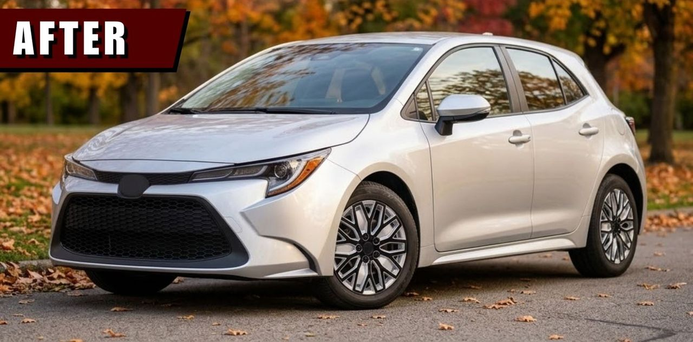
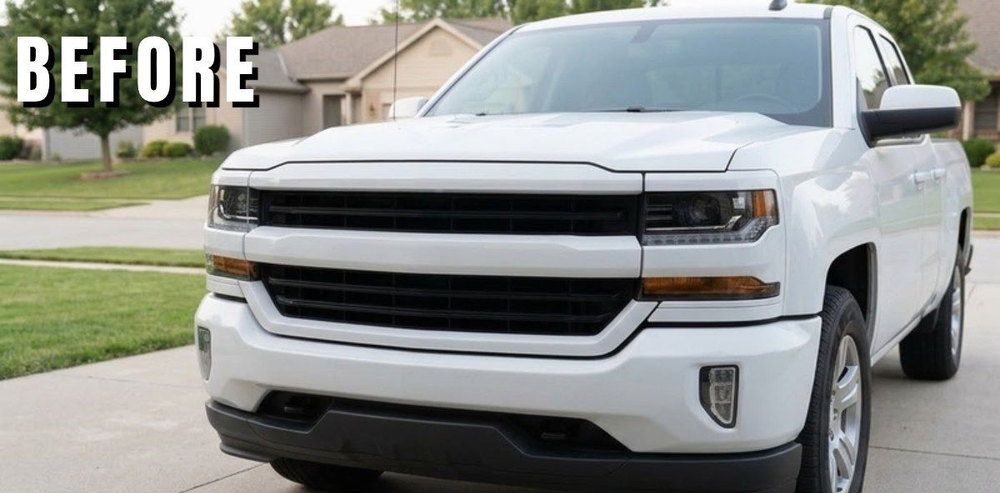
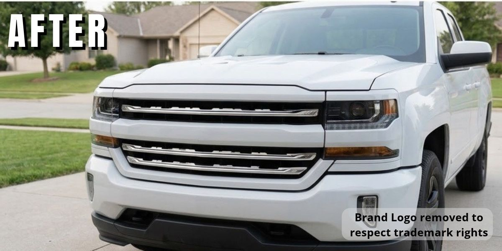
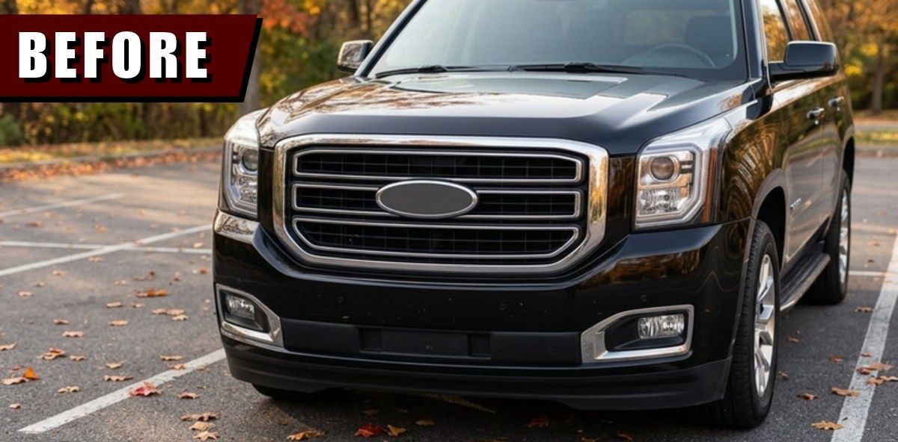
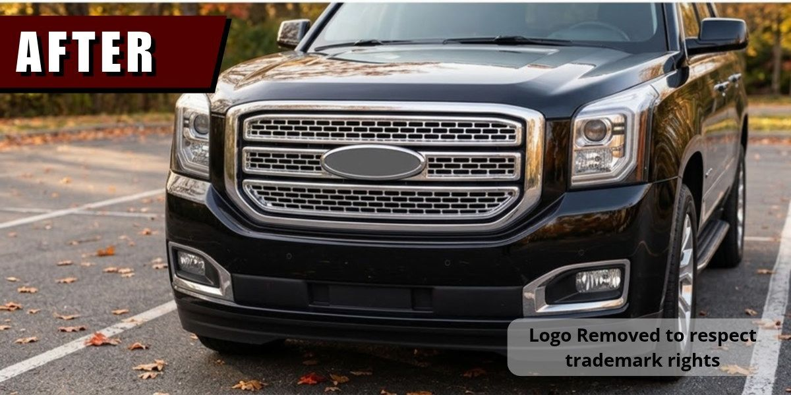
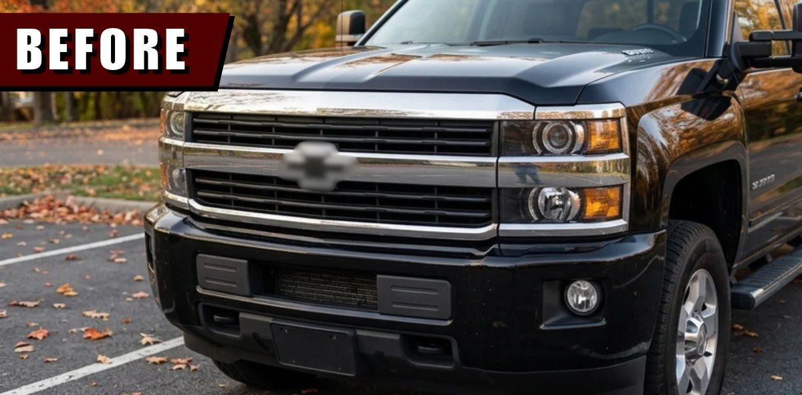
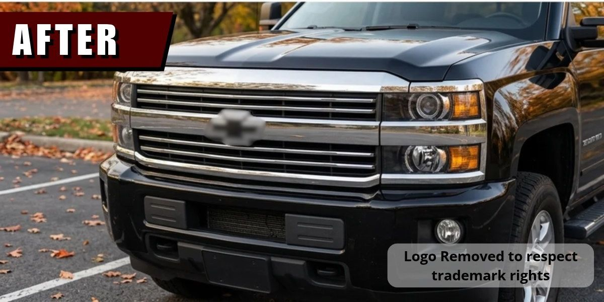

01
Spec
Set the output: 2000×2000 canvas, brand scene, camera angle, labels, file naming by part number.
Portfolio · 2026
AI Photo Editing & Image Quality Control
Product & Listing Imagery
Laguna, Philippines
About & approach
I produce photorealistic listing images for automotive accessory brands sold on Amazon, eBay, and Walmart. My role is to define what “right” looks like, direct AI image workflows to get there, and check every image before it goes live. I generated some images myself in Gemini, while AI tools did most of the pixel-level cutouts, background swaps, and recolors under my direction.
Set the output: 2000×2000 canvas, brand scene, camera angle, labels, file naming by part number.
Write detailed prompt templates with the real product photo as the reference: paint match, angle, scene, lighting.
Generate or composite with AI tools; direct cutouts, background removal, and re-templating in batches.
Check at full size against the real part: clipping, rough edges, halos/white bleed, perspective, realism.
Lay out in Canva, upload to the asset library, and tick each part off on a Google Sheets checklist.
I’m a quick learner and I adapt fast to new editing styles and workflows. I’m ready to apply these skills in other imagery.
Before / after product compositing

BeforeAfter
Brand B · autumn parking lot style


BeforeAfter
Brand B · low three-quarter angle
Same car, same scene, same angle; only the wheels change. The “after” must match the real product design and finish, and the car’s paint, reflections, and shadows must stay consistent.
When AI tools could not reproduce a hubcap design exactly, I chose to place the real product photo onto the wheel instead, so the listing never shows a design the customer won’t receive.
Before / after product compositing
Every “after” is checked against the real part photo. Here: one part number, two brand scenes.
What I check: spoke count and shape; finish (black, silver, chrome); size relative to the tire; perspective matching the car’s angle; no halo or hard edge where the wheel meets the tire.
Brand style consistency
Two automotive accessory brands, each with a defined scene that stays the same across hundreds of images, so each catalog reads as one set.
Suburban residential street, soft daylight, “AFTER” label bottom-right
Autumn parking lot, warm foliage, maroon “BEFORE/AFTER” tabs top-left
Before / after product compositing
Grille inserts sit inside the vehicle’s own grille, so the insert has to follow the grille’s shape, depth, and perspective, and pick up the scene’s reflections. From a 46-page mixed-brand Canva set.


Brand A · full-front view, chrome insert


Brand B · close front view, mesh insert


Brand B · insert follows the grille’s shape and perspective
Marketplace pack shots
I specified the X1 (single item) and X4 (set of four) layouts used for marketplace main and secondary images.
Comparison images
Side-by-side images that show buyers which rim style a wheel skin fits, so they can avoid ordering the wrong one.
Part of a larger fitment library, alongside the 478-page rim-fitment and 423-page wheel-skin Canva sets.
Quality control case study
Brief: re-crop each rim, remove the background, and rebrand it onto the banner + garage-background template. AI tools did the cutouts and templating; I set the standard and reviewed every round.
The standard: the whole rim is visible; edges are clean with no white fringe; the garage background shows through the spoke windows; the barrel is intact.
A full-size (100%) recheck of the batch confirmed real defects on about 96 images. Below are 100% crops (each pair: flagged, then fixed).
Approved finals for the four rims shown above (IMP457BLK, IMP476BLK, IMP369X, IMP419BLK)
The same checks carry over to other imagery: perspective and straight verticals, clean edges, and no halos where an edited area meets the original photo.
Asset management
About 7,700 product images across three brand buckets on Backblaze B2, organized into 50+ product-type albums with part-number naming. I built Image Vault, a web dashboard to manage them: upload, search, filter, bulk ZIP download, rename, album categories, and shareable links.
For an editing team this means every file has a clear name, sits in the right album, and can be found and delivered in seconds. Screenshot is from the working app, shown with a small test set.
Next step
Send a few sample photos with your style guide, and I’ll return them on time with notes on each QC check I made: perspective, color consistency, edge cleanliness, and realism.
Harry Pascual